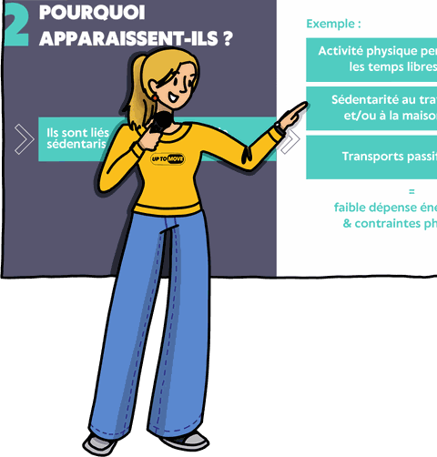
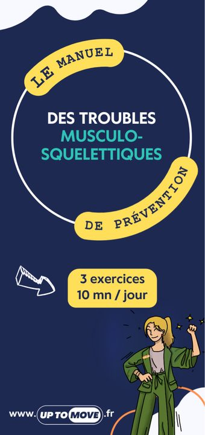
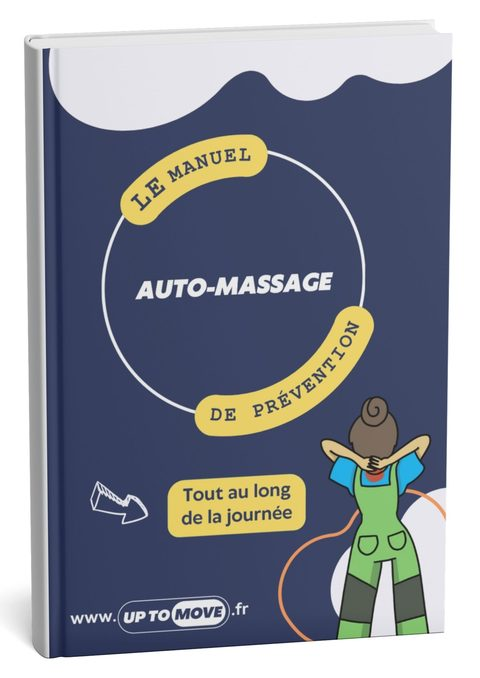
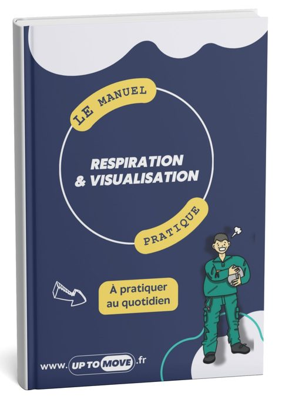
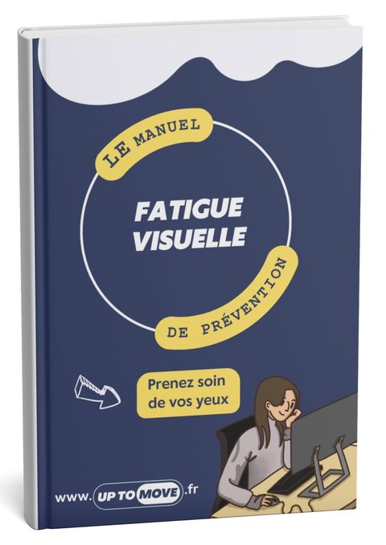

Les formations UP TO MOVE offrent des solutions concrètes et adaptées pour préserver la santé, améliorer le confort postural et renforcer le bien-être au travail.
Sensibilisation · Économies gestuelles · Échauffement · Auto-massage · Gestion du stress
Des formats de 30 minutes à 1 heure, dans vos locaux, adaptés aux postes sédentaires comme pour les postes de manutention.
Toutes nos formations sont certifiées Qualiopi.
Dans un contexte professionnel de plus en plus sédentaire, il est essentiel d'agir avant que les douleurs ne s'installent.
En investissant dans la prévention, les entreprises protègent leurs collaborateurs tout en gagnant en performance et en efficacité.
Sensibilisation à la démarche de prévention des TMS adaptée à toutes fonctions et à tout secteur d'activité.

Atelier pour donner les clés de prévention des gestes posturaux adaptés à un poste sédentaire et lors d'un travail sur écran.

Analyse individuelle de poste visant à prévenir les TMS, avec objectifs clairs et étapes spécifiques (30 minutes maximum).
Outils pratiques pour gérer l'apparition de TMS, avec un focus particulier sur l'auto-massage comme méthode accessible et efficace.

Outils pratiques pour gérer le stress au quotidien, avec un focus sur la respiration comme méthode accessible et efficace.

Cette formation vous aidera à transformer votre relation avec le stress.
Outils pratiques pour comprendre et gérer au quotidien la fatigue visuelle liée au travail sur écran.

Introduction à la fatigue visuelle et ses causes. Comprendre les effets du travail prolongé sur écran : symptômes, causes principales et facteurs aggravants.
Les métiers de la manutention sollicitent fortement le corps au quotidien : gestes répétitifs, ports de charges, postures contraignantes…
Investir dans la formation, c'est protéger la santé de chacun tout en améliorant la sécurité, la productivité et la durabilité des équipes.
Sensibilisation à la démarche de prévention des TMS adaptée à tous secteurs d'activité : bureautique et manutention.
Atelier pour donner les clés de prévention des bons gestes posturaux spécifiques à la manutention manuelle et aux postes en station debout.
Analyse individuelle de poste de manutention visant à prévenir les TMS. Observation des gestes réels et recommandations personnalisées.
Programme d'échauffement adapté aux métiers de la manutention pour préparer le corps à l'effort et prévenir les blessures dès la prise de poste.
Outils pratiques d'auto-massage pour gérer les douleurs liées aux contraintes physiques de la manutention.
Introduction à l'auto-massage (comprendre les techniques d'auto-massage et ses effets, …)
Outils pratiques pour gérer le stress physique et psychologique lié aux métiers de la manutention.
Cette formation vous aidera à transformer votre relation avec le stress.
Programmes détaillés, durées, publics visés et modalités : téléchargez le catalogue complet des formations UP TO MOVE pour le partager en interne ou préparer votre demande de devis.
Devis personnalisé gratuit sous 48h. Intervention possible partout en France, en présentiel ou à distance.
La certification qualité a été délivrée au titre de la catégorie d'action suivante :
Actions de formation
Consulter le certificat Qualiopi